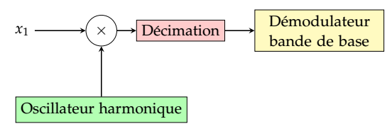

demodulator_new
Création d'un démodulateur numérique.
Namespace: dsp::telecom
Prototype
sptr<Demodulator> demodulator_new(const ModConfig &modconfig, const DemodConfig &demodconfig=DemodConfig())
Parameters
| modconfig | Structure de configuration, permettant de choisir la forme d'onde, les fréquences, ... (voir ModConfig) |
| demodconfig | Structure de configuration, permettant de choisir l'architecture et les paramètres du démodulateur (voir DemodConfig) |
Description
Un démodulateur consiste ici à convertir un signal en bande de base (ou transposé à une fréquence intermédiaire) vers un train binaire (ou un train de LLR symboles, pour le cas où un code correcteur est utilisé en aval).
La première étape (optionnelle) de la démodulation consiste à transposer un signal centré autour d'une fréquence intermédiaire donnée vers un signal bande de base. Cette étape comprends éventuellement une décimation, afin d'alléger les traitemens ultérieurs (une fois en bande de base, la fréquence d'échanitillonnage peut être réduite) :

Démodulation - transposition en bande de base
La deuxième étape est la démodulation des signaux, qui est possible suivant deux architectures décrites ci-après :
- Architecture dite basée sur la décision : c'est l'architecture permettant la meilleure sensibilité, et c'est donc celle-ci qui est recommandée.
- Warning
- Un inconvénient de cette architecture est qu'il est nécessaire d'avoir un en-tête en début de trame afin de pré-acrocher les boucles de correction.
- Architecture non basée sur la décision. Elle présente l'avantage de pouvoir s'accrocher sur un signal en cours de route, même si les erreurs initiales de fréquence ou d'horloge sont importantes, alors que la première nécessite une "pré-accroche".
- Warning
- Contrairement à la première architecture, celle-ci fonctionnera très mal pour des modulations d'ordre élevé (8PSK, QAM, etc.), du fait des détecteurs d'erreur d'horloge et de phase utilisés, très sensibles à la modulation.
1. Architecture basée sur la décision
Cette architecture est dite basée sur la décision, car les détections d'erreurs d'horloge et de phase sont déduite après la "décision" sur chaque symbole, c'est-à-dire le démapping. Elle est constituée des blocs suivants (dans l'ordre) : Démodulation bande de base - architecture basée sur la décision
Correction d'horloge
La correction d'horloge est basée sur le détecteur d'erreur suivant :
où \(d_k,d_{k-1}\) sont les derniers symboles décodés (après décision), et \(y_{1/2}\) est l'avant dernier symbole interpolé (après correction d'horloge, mais avant décision), sachant que l'interpolation se fait à deux fois le rythme symbole (autrement dit, \(y_{k-1/2}\) est la valeur reçue à mi-chemin entre les symboles \(d_k\) et \(d_{k-1}\)).
Ce détecteur, adapté du détecteur de Gardner, présente d'avantage de pouvoir fonctionner pour la plupart des types de modulation.
Le filtre de boucle est un simple filtre du premier ordre, dont la constante de temps est réglable (voir DemodConfig).
Correction de phase
Le détecteur d'erreur de phase est ici très simple, puisque l'on dispose des symboles après décodage :
Le filtre de boucle est un filtre du second ordre, dont les paramètres sont réglables (voir DemodConfig et filtre_boucle_ordre_2()).
2. Architecture non basée sur la décision
Cette architecture est constituée des blocs suivants :
Dans cette architecture, contrairement à la première, chaque bloc fonctionne indépendemment des autres (il sont juste concaténés en série).
Exemple : démodulation QPSK
Exemples de démodulation QPSK
Notez que le train binaire démodulé est décalé dans le temps, ceci est du aux filtres utilisés en réception (ainsi qu'à l'interpolation utilisée pour le recouvrement d'horloge).See also
modulateur_création()